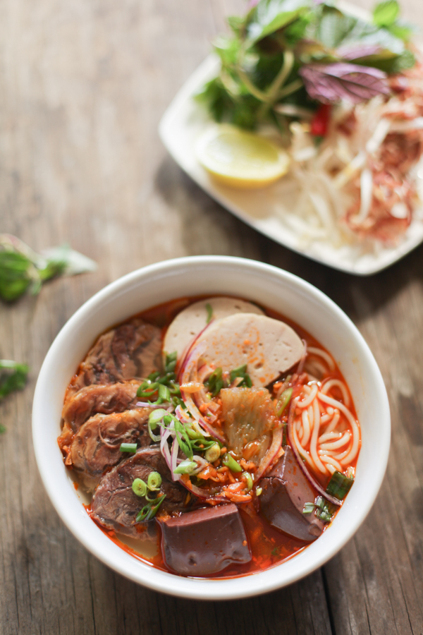
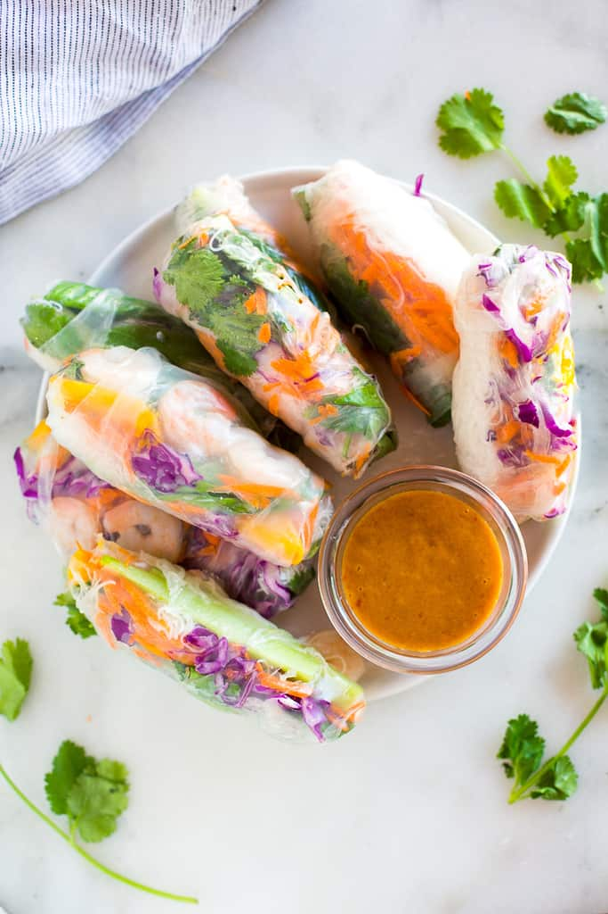

Pho

There is no pleasure quite the same as tucking into a steaming bowl of hot homemade soup. Pho, a staple Vietnamese soup, is no exception. Much like miso to Japanese cooking and chicken noodle soup to American cooking, this soup is full of flavors to comfort and warm you up... Continue reading
Spicy Beef Noodles

Spicy Noodles Beef soup (Bún Bò Huế) is a hidden Vietnamese gem that has yet to “make it” in mainstream American cuisine. It’s a rich and spicy soup with deep layers of flavor. This Central Vietnamese soup is paired with tender slices of beef and pork, then topped with lots of fresh herbs...Continue reading
Spring Roll

These spring rolls are a refreshing change from the usual fried variety, and have become a family favorite. They are great as a cool summertime appetizer, and are delicious dipped in one or both of the sauces...Continue reading